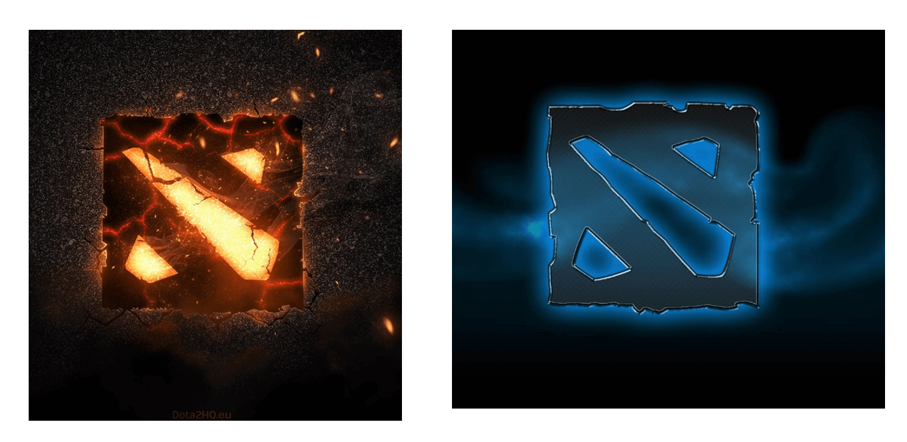

Website development




Gant diagram
The project is aimed at the gamers of the game of dota 2, throughout the history of this video game in our country has been shown that gamers invest a lot of their time and money to meet their opportunities to improve and belong to big leagues They are played all over the world, including IT, the international where the best teams from all over the world play.
The Gantt chart is a graphical tool whose objective is to expose the expected dedication time for different tasks or activities over a given total time; in this case we will use it to launch ARTIPLAYER, with different artifacts for gamers.
Archive - Gant's diagramSOCIAL IMPACT
-This series of lamps are inspired by classic style desk lamps and with a modern touch. However, we have chosen to make more new designs, offering larger and brighter optical illusion lamps that aim to alter the perception of space and shape by using 3D shapes as the basis of their 2D designs.
-Our project has the opportunity to cover several types of lamps with designs of DOTA 2, we can make a product dedicated to the tastes of the client. We take advantage of the importance that technology has taken on entertainment, which is more dedicated to a young audience.
-Currently the market dedicated to the young public has grown as fashion continues to change; as an example we currently live in an era where technology is getting everywhere, as in entertainment.
-Video games are an opportunity that we have noticed to take advantage, many young people have a pastime to video games (DOTA 2) and most find something that captures their attention as a favorite character or even a console brand which could be their taste too.
-That is why they feel the need to have something that keeps them connected with their favorite pastime during homework or when they are simply dedicating their time to another activity without this present or using their console, then the best way to satisfy that need is to acquire some souvenir or object dedicated to those you need; in our case we can offer designs where the young public can choose according to their tastes.
Electrical Part of the Project - Arduino Programming and RGB by WIFI
Sending data to the Internet
What comes to mind just knowing this type of device is the possibility of sending any data they have available to the Internet, either to a website or a cloud service that registers such data, such as ThingSpeak, although there are many others with similar characteristics.
Hardware
-It uses a Tensilica L106 32-bit CPU, operating voltage between 3V and 3.6V, operating current 80 mA, and the operating temperature ranges from -40ºC and 125ºC.
Connectivity
Supports IPv4 and TCP / UDP / HTTP / FTP protocols, does not support HTTPS at first. Yes, it does so through software in both client and server TLS1.2. The first implementation is still under development. GPIO ports (general purpose)
It has 17 GPIO ports but only 9 or 10 can be used. The GPIO16 is special since it is connected to the RTC (Real Time Clock), it can be configured with Pull-up or Pull-down resistance, and it supports the main communication buses ( SPI, I2C, UART).
Electrical characteristics
-Working voltage between 3V and 3.6V: According to news from the CEO of Espressif, it admits 5V input voltages in the GPIO ports.
-Consumptions: It will depend on different factors such as the way the ESP8266 is working, the protocols we are using, the quality of the WiFi signal and, above all, whether we send or receive information through WiFi. They oscillate between 0.5 μA (microamperes) when the device is off and 170 mA when transmitting to signal stop.
-Modes of operation: Due to the sectors to which it is focused, wereables, IoT and mobile devices, the ESP8266 requires an effective energy management. It has a low consumption architecture that works in 3 modes.
-Active mode or active mode: full performance, Sleep mode or sleep mode: only the RTC (Real Time Clock) is active to maintain synchronization. It stays in alert mode of the possible events that make you wake up. It keeps the connection data in memory and so there is no need to reconnect with WiFi. It consumes between 0.6 mA and 1 mA, and the Deep sleep or deep sleep mode: the RTC is on but not operative. You must go through sleep mode before you wake up. We must take special care with the data since in this state it is as if it is turned off and all the data that is not stored is lost. Consumes around 20 μA.
First we will proceed to control the LEDs by means of Wi-Fi. For them
-The LED strips can be easily controlled with any type of microcontroller. In this example, we use PWM attenuation techniques to control the power of each RGB channel in the band. Since each color channel can absorb a lot of current (of the order of a few amperes, or more), power transistors are required. Do not try to connect the LED channels of the strip directly to your microcontroller, they will damage the outputs of the microcontroller or they will not work.
-You can use any NPN BJT or N-Channel MOSFET power, but make sure the transistor is capable of managing the current you need. For example, if your LED strip draws 0.2 A / m per channel, if you have a 5 m band you will need a transistor of up to 1 A. The common packet for the power transistor is the TO-220.
-For basic and low-cost systems we suggest using N-channel MOSFET, such as the IRF520N or the ST P55NF06 or the TIP120, they are very popular and inexpensive. If you can not get them, the NPN transistors are also good, but they have higher power losses than in the MOSFETs, so we suggest the first ones.
-The hardware to use is: Arduino UNO Board, ESP-01 WiFi module (with μPanel Firmware), ADP-01 Breadboard adapter, Breadboard, RGB LED Strip and Power Transistors (we used the N-MOS STP55NF06).
Customers
The project itself is aimed at all interested parties as are the same players from Dota 2, we will show some clients to whom we will offer our product.
- Victor Cardenas Humire (Owner of a Lan center)
- Eddie Conza Rojas (Player interested in the project)